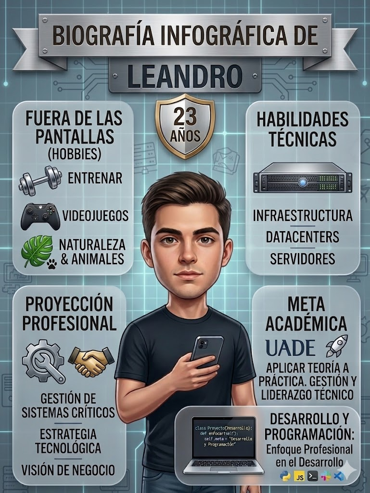

Infografía Personal

Sobre mí
Soy una persona proactiva, con muchas ganas de seguir creciendo dentro del mundo IT. Actualmente estoy estudiando y formándome constantemente para seguir desarrollando mis conocimientos, especialmente orientados a infraestructura, redes y tecnología. Me considero alguien curioso, con facilidad para aprender y adaptarme, y siempre busco nuevos desafíos que me permitan crecer tanto profesional como personalmente.